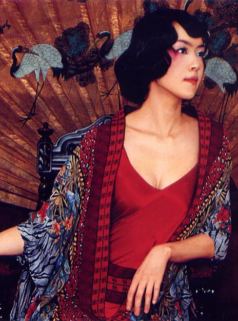

WEATHER
날씨를 불러오는 중
잠시만 기다려주세요.
WEATHER · MOOD · MUSIC
VOLUME 1 — DAILY SOUNDTRACK
지금의 날씨와 마음을 골라주세요.
오늘을 통과할 세 곡을 찾아드릴게요.
WEATHER
잠시만 기다려주세요.
MOOD
TODAY'S SELECTION
ARTIST OF TODAY

한국 록 무대의 한가운데에 선 목소리
1997년 밴드 자우림의 보컬로 데뷔해 30년 가까이 활동해온 싱어송라이터. 자우림에서는 몽환적이면서도 날 선 모던 록을, 솔로에서는 피아노와 현악이 어우러진 서늘한 서정을 들려준다. 한 사람이 이토록 다른 얼굴을 오가면서도 늘 자기 목소리로 들리게 만드는 것, 그것이 김윤아의 힘이다. 최근 한 인터뷰에서는 한국 록밴드, 특히 여성 프런트퍼슨의 역사가 김윤아 데뷔 이전과 이후로 나뉜다고 평가하기도 했다.
EDITOR'S COMMENT
김윤아의 노래는 밝을 때도 어딘가 그늘이 있고, 어두울 때도 끝내 단단하다. '하하하쏭'으로 후회를 날리다가 '샤이닝'로 조용히 내려앉는 진폭. 그 넓은 폭 덕분에 그의 음악은 어떤 날씨에도 들을 곡이 있다. 다시 밴드 붐이 왔다는 지금, 그 붐의 앞자리에 선 여성 보컬들이 누구의 길을 걸어왔는지 떠올려보자. 울적한 저녁이라면 '샤이닝'부터 들어보길 권한다.
'헤이 헤이 헤이'로 등장해 홍대 인디 신에서 대중 무대로 단숨에 올라섰다.
'매직 카펫 라이드'를 담은 앨범. 지금도 축제와 응원 현장에서 울려 퍼지는 곡이다.
같은 이름의 영화 OST. 록 보컬이 아닌, 담담하게 무너지는 김윤아의 목소리를 처음 각인시켰다.
밴드와는 결이 다른 재즈·샹송풍의 솔로 세계를 열었다. 이후 '야상곡' 등으로 이어졌다.
2026년 4월, 밴드 붐 속 여성 프런트퍼슨을 조명한 경향신문 기획 인터뷰에 참여했다. 9월에는 단독 콘서트 'Coffee and Cigarette'를 성신여대 운정캠퍼스 대강당에서 4회 열었다.